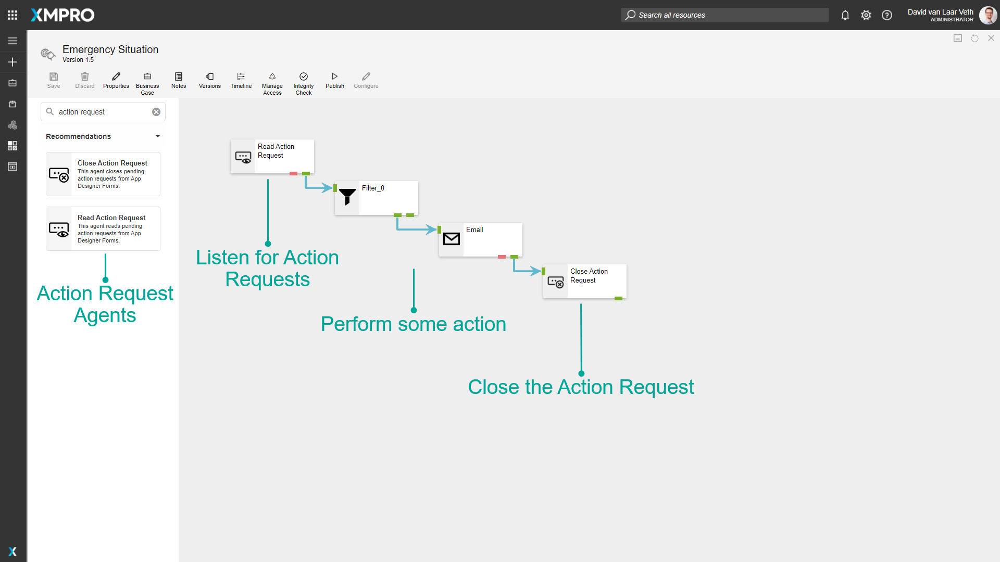

Action Requests
An Action Request is a mechanism to trigger actions in another system while attending to an Alert, such as updating data, sending notifications, or additional processing.
This is made possible with the Action Request Agents in the Data Stream Designer.
Note
It is recommended that you read this documentation along with the articles listed below to improve your understanding of how action requests work.
Open an Action Request
An Action Request is opened when a user clicks a button on a user-defined Form in a Recommendation Alert. The Action Request includes data derived from the Alert, Form, and Button clicked.
Note
If you add a button to a Form, ensure there is a corresponding Data Stream to process the Action Requests - or they will remain open and unprocessed.

Process an Action Request
The Read Action Request Agent polls App Designer for new Action Requests for the specified Recommendation and passes that data to the next Stream Object in the Data Stream for processing.
The Read Action Request Agent also sends all open Action Requests when the Data Stream is first published - so that any Action Requests opened while the stream was not running can be processed.
The Close Action Request Agent closes Action Requests from upstream. Processed Action Requests must be closed, or they will be reprocessed if the Data Stream is restarted.

Outputs of the Read Action Request Stream Object
| Output | Description |
|---|---|
| RequestId | The Id of the specific button press. This should be passed to the Close Action Request Stream Object's Action Id. |
| AlertId | The Id of the Recommendation Alert. |
| AlertDescription | The Headline of the Recommendation Alert. |
| AlertComments | The current Notes of the Recommendation Alert. |
| ActionRequested | The time that the button was pressed. |
| ActionParameters | A JSON string of the Recommendation Alert's Form's values at the time the button was pressed. |
Last modified: June 06, 2025